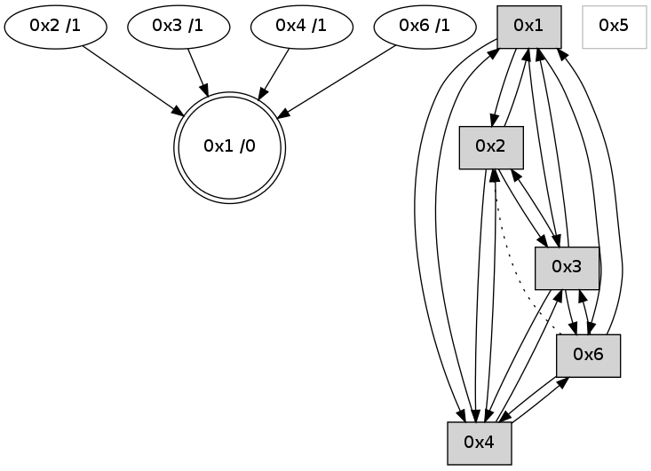

>> << IDX [start] -100 -25 -5 +0 +5 +25 +100 [675.322031021]
 Previous packets
----------------------------------------------------------------------
670.400949 beacon01(adaf) #0 coord=01,02,05,03,04,06 cycle=432.0ms assoc
-- color-indic=0 64 0f 8e
670.410912 beacon02(adaf) #0 coord=01,02,05,03,04,06 cycle=432.0ms assoc 64 5e 71
670.420911 beacon05(adaf) #0 coord=01,02,05,03,04,06 cycle=432.0ms assoc 64 f8 5b
670.430911 beacon03(adaf) #0 coord=01,02,05,03,04,06 cycle=432.0ms assoc 64 64 7f
670.440910 beacon04(adaf) #0 coord=01,02,05,03,04,06 cycle=432.0ms assoc 64 c2 55
670.450911 beacon06(adaf) #0 coord=01,02,05,03,04,06 cycle=432.0ms assoc 64 b6 49
670.461729 [Hello(1): seq=371 sym=2,4,3,6 sysInfo= stat=2:2,0,3,0/4:1,0,1,0/3:10,0,3,0/6:10,0,6,0]
670.466280 [Hello(4): seq=472 sym=3,1 asym=6,2 sysInfo= stat=3:0,0,4,0/1:15,0,10,0/6:11,0,3,0/2:0,0,0,0]
----------------------------------------------------------------------
670.893058 beacon01(adaf) #0 coord=01,02,05,03,04,06 cycle=432.0ms assoc
-- color-indic=0 64 cb e1
670.903018 beacon02(adaf) #0 coord=01,02,05,03,04,06 cycle=432.0ms assoc 64 9a 1e
670.913021 beacon05(adaf) #0 coord=01,02,05,03,04,06 cycle=432.0ms assoc 64 3c 34
670.923020 beacon03(adaf) #0 coord=01,02,05,03,04,06 cycle=432.0ms assoc 64 a0 10
670.933019 beacon04(adaf) #0 coord=01,02,05,03,04,06 cycle=432.0ms assoc 64 06 3a
670.943019 beacon06(adaf) #0 coord=01,02,05,03,04,06 cycle=432.0ms assoc 64 72 26
670.954346 [STC(1) #0.13 to-color d=0]
670.958368 [Hello(3): seq=471 sym=4,2,1,6 sysInfo= stat=4:11,0,4,0/2:0,0,1,0/1:7,0,8,0/6:4,0,4,0]
----------------------------------------------------------------------
671.385166 beacon01(adaf) #0 coord=01,02,05,03,04,06 cycle=432.0ms assoc
-- color-indic=0 64 b3 4c
671.395127 beacon02(adaf) #0 coord=01,02,05,03,04,06 cycle=432.0ms assoc 64 e2 b3
671.405128 beacon05(adaf) #0 coord=01,02,05,03,04,06 cycle=432.0ms assoc 64 44 99
671.415127 beacon03(adaf) #0 coord=01,02,05,03,04,06 cycle=432.0ms assoc 64 d8 bd
671.425128 beacon04(adaf) #0 coord=01,02,05,03,04,06 cycle=432.0ms assoc 64 7e 97
671.435130 beacon06(adaf) #0 coord=01,02,05,03,04,06 cycle=432.0ms assoc 64 0a 8b
671.446587 [Hello(1): seq=372 sym=2,4,3,6 asym= sysInfo= stat=2:2,0,3,0/4:1,0,1,0/3:11,0,3,0/6:10,0,6,0]
671.450728 [Hello(4): seq=473 sym=3,1 asym=2 sysInfo= stat=3:1,0,4,0/1:15,0,11,0/2:0,0,0,0]
671.454445 [STC(4)->1 #0.13 to-color d=1]
----------------------------------------------------------------------
671.877274 beacon01(adaf) #0 coord=01,02,05,03,04,06 cycle=432.0ms assoc
-- color-indic=0 64 77 23
671.887234 beacon02(adaf) #0 coord=01,02,05,03,04,06 cycle=432.0ms assoc 64 26 dc
671.897234 beacon05(adaf) #0 coord=01,02,05,03,04,06 cycle=432.0ms assoc 64 80 f6
671.907234 beacon03(adaf) #0 coord=01,02,05,03,04,06 cycle=432.0ms assoc 64 1c d2
671.917235 beacon04(adaf) #0 coord=01,02,05,03,04,06 cycle=432.0ms assoc 64 ba f8
671.927236 beacon06(adaf) #0 coord=01,02,05,03,04,06 cycle=432.0ms assoc 64 ce e4
671.938972 [Hello(3): seq=472 sym=4,1,6 sysInfo= stat=4:11,0,4,0/1:8,0,8,0/6:5,0,5,0]
----------------------------------------------------------------------
672.369381 beacon01(adaf) #0 coord=01,02,05,03,04,06 cycle=432.0ms assoc
-- color-indic=0 64 3b 93
672.379342 beacon02(adaf) #0 coord=01,02,05,03,04,06 cycle=432.0ms assoc 64 6a 6c
672.389342 beacon05(adaf) #0 coord=01,02,05,03,04,06 cycle=432.0ms assoc 64 cc 46
672.399342 beacon03(adaf) #0 coord=01,02,05,03,04,06 cycle=432.0ms assoc 64 50 62
672.409342 beacon04(adaf) #0 coord=01,02,05,03,04,06 cycle=432.0ms assoc 64 f6 48
672.419342 beacon06(adaf) #0 coord=01,02,05,03,04,06 cycle=432.0ms assoc 64 82 54
672.431023 [Hello(4): seq=474 sym=3,1 sysInfo= stat=3:2,0,4,0/1:15,0,11,0]
672.434732 [Hello(2): seq=967 sym=4,1,3 sysInfo= stat=4:0,0,0,0/1:9,0,11,0/3:1,0,4,0]
672.444514 [Hello(1): seq=373 sym=2,4,3 sysInfo= stat=2:2,0,3,0/4:1,0,1,0/3:12,0,3,0]
----------------------------------------------------------------------
672.861490 beacon01(adaf) #0 coord=01,02,05,03,04,06 cycle=432.0ms assoc
-- color-indic=0 64 ff fc
672.871451 beacon02(adaf) #0 coord=01,02,05,03,04,06 cycle=432.0ms assoc 64 ae 03
672.881451 beacon05(adaf) #0 coord=01,02,05,03,04,06 cycle=432.0ms assoc 64 08 29
672.891452 beacon03(adaf) #0 coord=01,02,05,03,04,06 cycle=432.0ms assoc 64 94 0d
672.901451 beacon04(adaf) #0 coord=01,02,05,03,04,06 cycle=432.0ms assoc 64 32 27
672.911451 beacon06(adaf) #0 coord=01,02,05,03,04,06 cycle=432.0ms assoc 64 46 3b
672.923161 [Hello(3): seq=473 sym=4,2,1,6 sysInfo= stat=4:11,0,4,0/2:0,0,0,0/1:9,0,8,0/6:6,0,5,0]
----------------------------------------------------------------------
673.353600 beacon01(adaf) #0 coord=01,02,05,03,04,06 cycle=432.0ms assoc
-- color-indic=0 64 b2 fb
673.363561 beacon02(adaf) #0 coord=01,02,05,03,04,06 cycle=432.0ms assoc 64 e3 04
673.373561 beacon05(adaf) #0 coord=01,02,05,03,04,06 cycle=432.0ms assoc 64 45 2e
673.383562 beacon03(adaf) #0 coord=01,02,05,03,04,06 cycle=432.0ms assoc 64 d9 0a
673.393563 beacon04(adaf) #0 coord=01,02,05,03,04,06 cycle=432.0ms assoc 64 7f 20
673.403562 beacon06(adaf) #0 coord=01,02,05,03,04,06 cycle=432.0ms assoc 64 0b 3c
673.414611 [Hello(1): seq=374 sym=2,4,3 sysInfo= stat=2:2,0,3,0/4:1,0,1,0/3:13,0,3,0]
673.418591 [STC(1) #0.14 to-color d=0]
673.420635 [Hello(4): seq=475 sym=2,3,1 sysInfo= stat=2:0,0,0,0/3:3,0,4,0/1:0,0,11,0]
673.424366 [Hello(6): seq=389 sym=3,4,1 asym=2 sysInfo=hasWarning stat=3:5,0,3,0/4:1,0,1,0/1:8,0,11,0/2:10,0,2,0]
----------------------------------------------------------------------
673.845708 beacon01(adaf) #0 coord=01,02,05,03,04,06 cycle=432.0ms assoc
-- color-indic=0 64 76 94
673.855668 beacon02(adaf) #0 coord=01,02,05,03,04,06 cycle=432.0ms assoc 64 27 6b
673.865668 beacon05(adaf) #0 coord=01,02,05,03,04,06 cycle=432.0ms assoc 64 81 41
673.875670 beacon03(adaf) #0 coord=01,02,05,03,04,06 cycle=432.0ms assoc 64 1d 65
673.885669 beacon04(adaf) #0 coord=01,02,05,03,04,06 cycle=432.0ms assoc 64 bb 4f
673.895669 beacon06(adaf) #0 coord=01,02,05,03,04,06 cycle=432.0ms assoc 64 cf 53
673.907600 [Hello(3): seq=474 sym=4,2,1,6 sysInfo= stat=4:12,0,4,0/2:0,0,0,0/1:10,0,9,0/6:7,0,5,0]
673.910746 [STC(3)->1 #0.14 to-color d=1]
----------------------------------------------------------------------
674.337815 beacon01(adaf) #0 coord=01,02,05,03,04,06 cycle=432.0ms assoc
-- color-indic=0 64 3a 24
674.347776 beacon02(adaf) #0 coord=01,02,05,03,04,06 cycle=432.0ms assoc 64 6b db
674.357776 beacon05(adaf) #0 coord=01,02,05,03,04,06 cycle=432.0ms assoc 64 cd f1
674.367777 beacon03(adaf) #0 coord=01,02,05,03,04,06 cycle=432.0ms assoc 64 51 d5
674.377777 beacon04(adaf) #0 coord=01,02,05,03,04,06 cycle=432.0ms assoc 64 f7 ff
674.387779 beacon06(adaf) #0 coord=01,02,05,03,04,06 cycle=432.0ms assoc 64 83 e3
674.398926 [Hello(1): seq=375 sym=2,4,3,6 sysInfo= stat=2:3,0,3,0/4:1,0,1,0/3:13,0,4,0/6:0,0,0,0]
674.403126 [Hello(4): seq=476 sym=2,3,1,6 sysInfo= stat=2:0,0,0,0/3:3,0,5,0/1:0,0,11,0/6:0,0,0,0]
----------------------------------------------------------------------
674.829922 beacon01(adaf) #0 coord=01,02,05,03,04,06 cycle=432.0ms assoc
-- color-indic=0 64 fe 4b
674.839883 beacon02(adaf) #0 coord=01,02,05,03,04,06 cycle=432.0ms assoc 64 af b4
674.849883 beacon05(adaf) #0 coord=01,02,05,03,04,06 cycle=432.0ms assoc 64 09 9e
674.859884 beacon03(adaf) #0 coord=01,02,05,03,04,06 cycle=432.0ms assoc 64 95 ba
674.869884 beacon04(adaf) #0 coord=01,02,05,03,04,06 cycle=432.0ms assoc 64 33 90
674.879884 beacon06(adaf) #0 coord=01,02,05,03,04,06 cycle=432.0ms assoc 64 47 8c
674.891572 [Hello(3): seq=475 sym=4,2,1,6 sysInfo= stat=4:12,0,4,0/2:0,0,0,0/1:11,0,9,0/6:7,0,5,0]